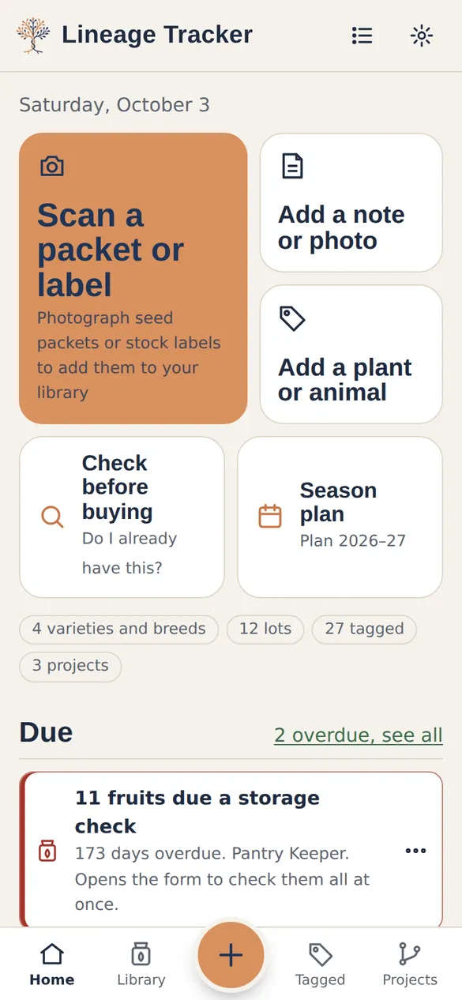
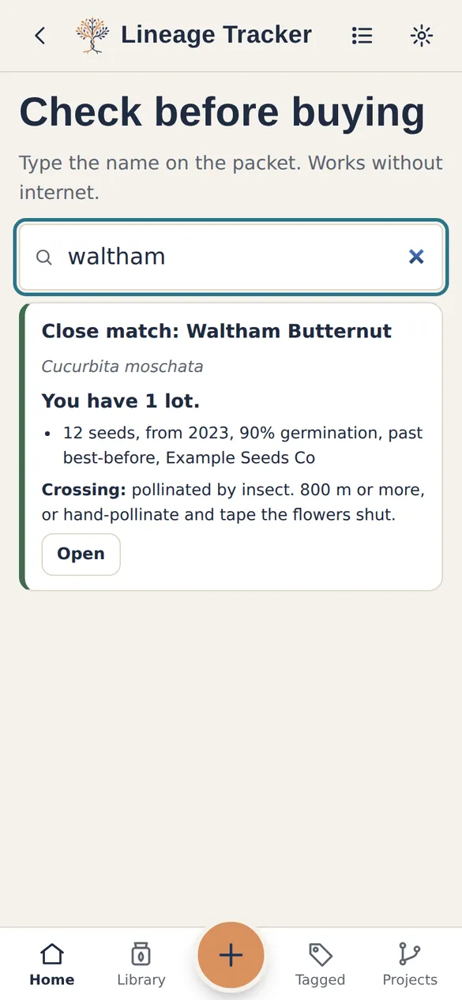
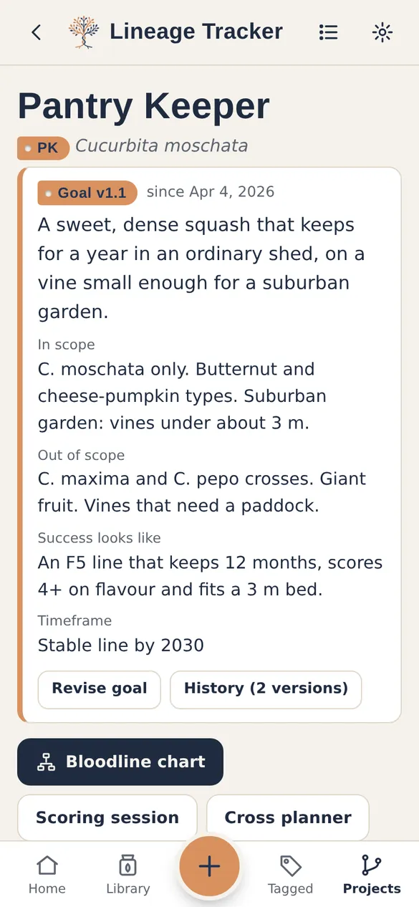
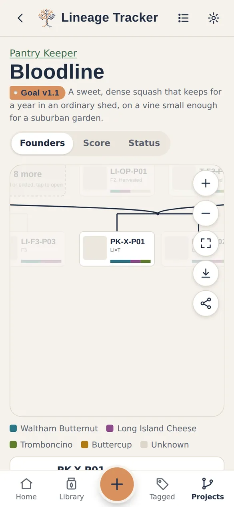

Lineage Tracker
Lineage TrackerLineage Tracker
Breeding records for plants and animals
A free app for seed savers, home gardeners and small-scale breeders. Keep your seed library, follow every plant and animal through its life, record crosses, and watch your bloodlines grow, season after season.
Free forever. No paid tiers, no ads, no account. Everything stays on your own device.
Made for plants and animals
See what it does for you, how each feature works, and where to find it.
For plants
Seed library, check before buying, season plans and seed trays, through to seed saving, crosses and breeding projects.
See the plant features ›For animals
Every animal with its IDs, pairings, hatch and birth dates, health and treatments, inbreeding checks and pedigree certificates.
See the animal features ›As simple or as detailed as you like
When you first open it, Lineage Tracker asks what you keep (plants, animals or both) and how you'll use it. It only shows what you need, and you can change your mind any time without losing anything.
Garden
For knowing what you've got.
- Seed library from packet photos
- Check before buying
- Season plan and seed trays
- Notes and photos as things grow
Seed saver
For saving your own seed and trying a few crosses.
- Parents recorded on saved seed
- Germination tests
- Harvests and storage checks
- Crossing warnings and labels
Breeder
For projects that run over many generations.
- Goals with version history
- Selection scores and comparisons
- Bloodline chart and cross planner
- Inbreeding checks and progress charts
What it does
Seed and stock library
Photograph a packet to add it. Track how much you have, how old it is and how well it germinates, including cuttings, tubers, young plants and hatching eggs.
Every plant and animal
Give the ones that matter their own label, photo history, notes and measurements. Seed trays let you pot up the survivors as tracked plants.
Crosses and bloodlines
Record pollinations, matings and clones. A family-tree chart shows where each one came from and how much of each founder it carries.
Goals and selection
Write down what you're breeding towards, score candidates against it, and see each generation's progress.
Weather by season
See each season's rain, heat and frost against a usual year, alongside your results. Add your own rain gauge if you keep one.
Share, swap or sell
Share a variety with a friend, history included, or turn your photos into a collage or slideshow. If you choose to sell or swap, list prices and postage. Lineage Tracker never handles payment.




Your records stay yours
- Stored on your device. Works without internet, and nothing leaves it unless you choose.
- One-tap backups. A single file with every record and photo, plus spreadsheet copies you can open without the app.
- Optional sync between your phone, tablet and computer through your own Google Drive or Dropbox. There's no Lineage Tracker server in between.
- No payments, no personal details. When you share or list something, only what you type is shared.
- Read more: Your data, your choice.
- Bring your old records. Import spreadsheets or files converted with Claude or ChatGPT.
Read and watch
Stories from members, and short how-to videos that show the app in use.
The LT tools
Bigger tools that sit beside the app. Free with a member account, opening soon. Your work saves to your own Google Drive, Dropbox or device, never to our server.
LT-Print
Design your own labels and stickers. Drag in fields from your records, QR codes, barcodes and your logo, then print a whole sheet. Designs also work in the app, offline.
See LT-Print ›LT-Planner
Plan a garden or farm: beds, paths, water and what grows where through the season, with planting guides, seed-saving and crop rotation checks. Plans go to the app.
See LT-Planner ›Online, by choice: Lineage Tracker is not a forum and isn't building a community of its own. It supports the clubs, seed libraries, societies and groups that already exist. See what's next.
Get involved
Help shape it
It's being tested by gardeners and breeders before its wider launch. Try it and tell us what works.
Clubs and seed libraries
Give your members their own version, with your name, logo and only the features they need. Free.
Built in the open
The code and a plain-English guide to the data format are on GitHub, so your records are never locked in.